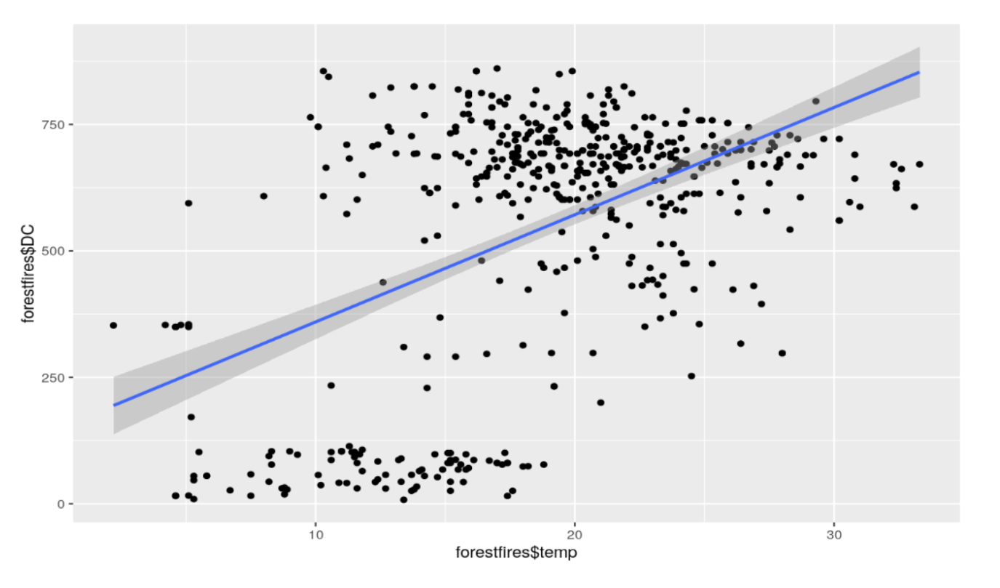
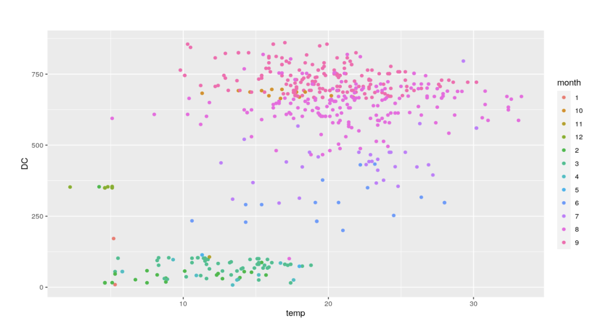
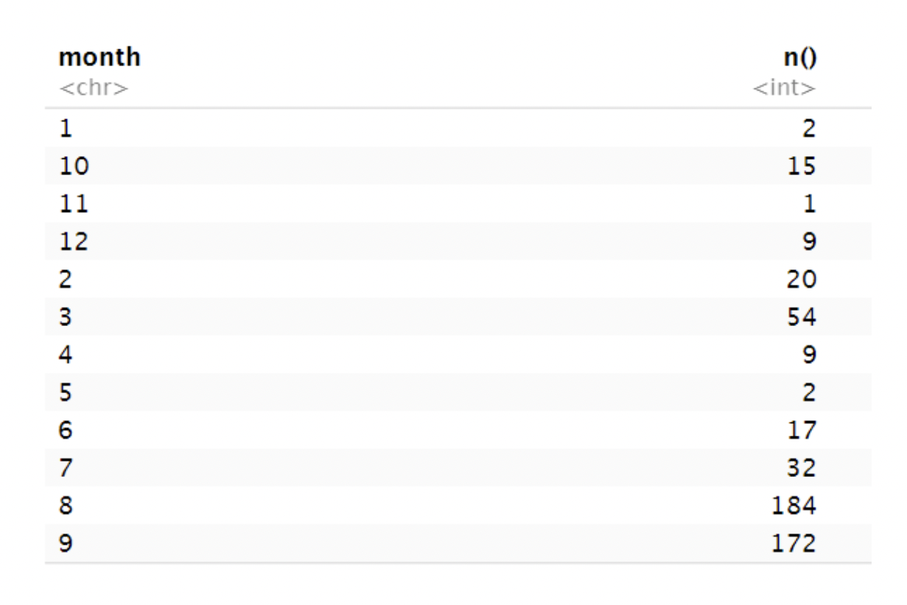
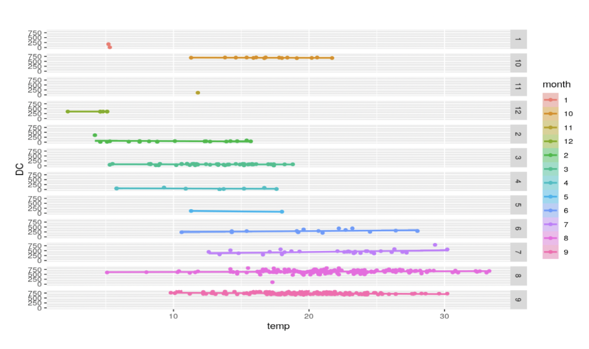
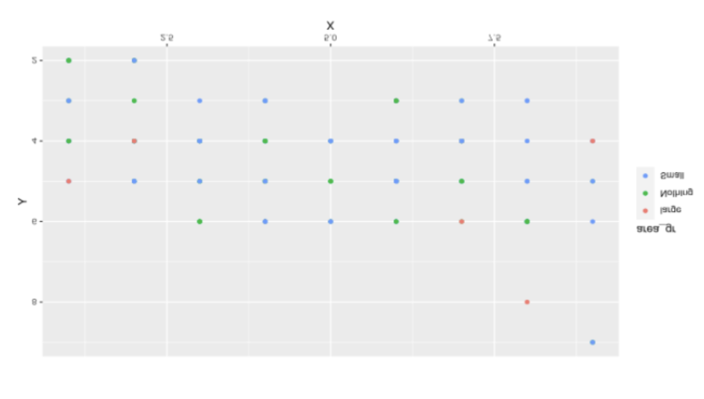
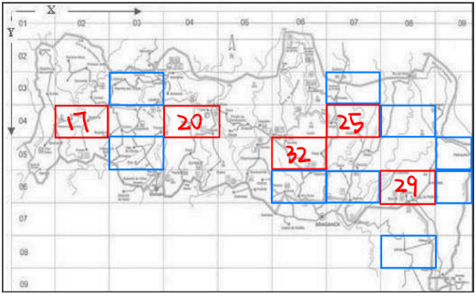
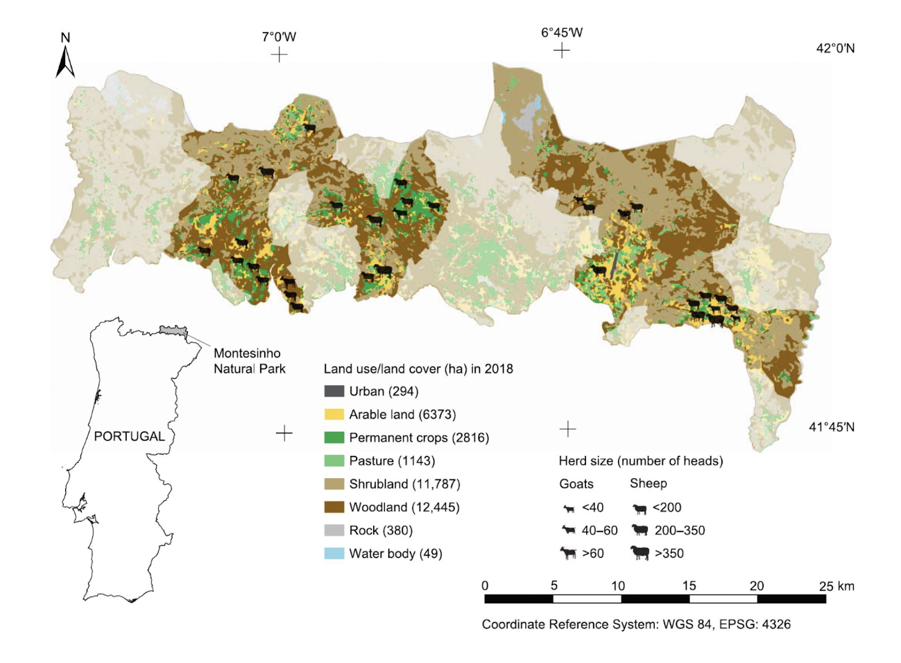
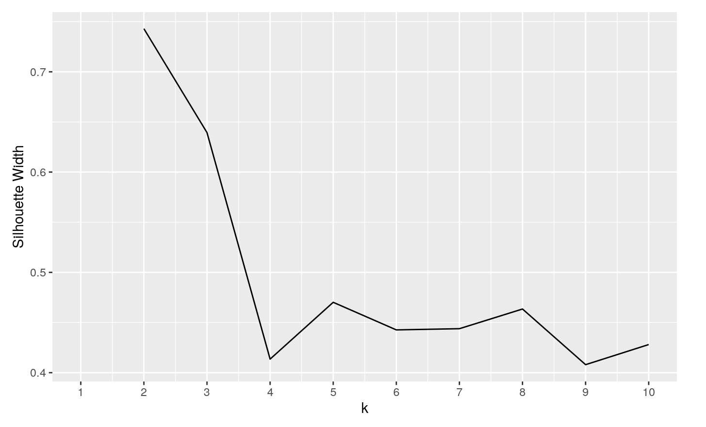
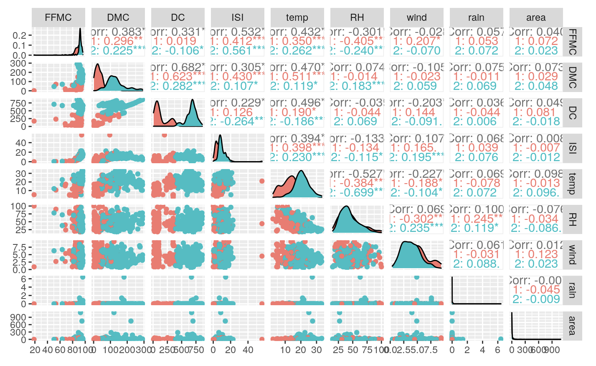
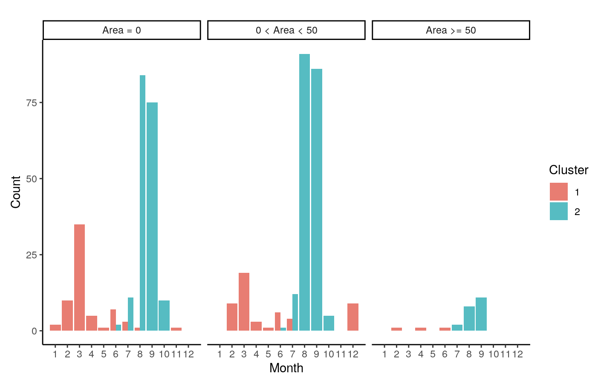

Exploratory Analysis
Hypothesis I
For hypothesis one, we want to know the relationship between DC and temperature. Due to the Canadian Forest Fire Weather Index System, DC is a drought code, which presents how dry the area is. The higher the drought code, the more extreme the drought is. Our first step is to graph a scatter plot with a smooth line. We can see from the scatter plot that there is a small cluster in the lower left corner and a big cluster in the upper right corner. Both clusters’ centers are not close to the positive line, so we colored the scatterplot by month. We can see that the smaller cluster in the lower left corner is green, and the larger cluster in the upper right is pink. The green color presents the spring months, such as February and March. The pink color presents the fall months, such as August and September. We can see that there are more pink observations than the other colors. Therefore, we made a frequency table for the observations in each month. It is clear that August and September have more observations than the rest of the months. 2+15+1+9+20+54+9+2+17+32= 161 < 172 (September) < 184 (August). Then we remake the scatter plot for temperature and drought code by monthly instead. We can see that each month does not have a strong relationship between temperature and drought code. An obvious observation is that August has a wide range of temperatures, from 5 to 35 degrees, and the slope of the line is flat. In summary, there is no strong evidence that as temperature increases, the drought code increases. It is possible that drought codes change to seasonal changes.




Hypothesis II
One of the hypotheses that we would be exploring with the variables of our data is whether higher temperatures can lead to lower humidity levels when looking at the two variables: Relative Humidity and Temperature. After conducting this, we found that Relative Humidity in our x-axis and Temperature in the y-axis of our graph leads to a negative linear relationship between the variables. The results showed that as relative humidity increases, temperature increases. This would be vise-versa that as temperature increases, relative humidity decreases, as we see by the inverse relationship between these two variables, which proves our initial hypothesis to be true.

Hypothesis III
In our third hypothesis, we try to analyze whether a greater Initial Spread Index (ISI) leads to a greater Fine Fuel Moisture Code (FFMC). Using these two numeric variables and conducting the same test for seeing the relationship between relative humidity and temperature, we were able to see a fitted positive linear correlation when using ISI as our x-axis and FFMC as our y-axis. This fitted correlation is part of what seems to be an exponential increase relationship between the two variables, with a few significant outliers. Nevertheless, our hypothesis continues to be proved by the linear regression model of these two variables.

Hypothesis IV
To figure out whether the location is a factor of forest fire burning area, we first map each observation into a map with its X and Y coordinates. We found the data collection map online. The map we form by the X and Y axis matches the park map. We want to know if each location has a different burning area. Therefore, we colored each observation by the group of burning areas with green for 0, blue for 1, and red for 2 as described in data cleaning. It is clear to see that the southern border has a larger burned area than the rest.


By using the dataset with only 207 observations which exclude the area = 0, and summarizing the x and y-axis frequency, we drew the graph above. The number within the rectangle indicates the frequency of forest fires collected from observed data. The blue sections are areas with fewer fire accidents. In contrast, the red sections are areas with more fire accidents, with a top on top indicating the frequency. It is clear to us that the blue sections surround the red sections. Several causes may result in this behavior, including but not limited to timely first-time response, weather, geographic factors, and different vegetation coverage.

Clustering
We further analyzed our data via clustering. We decided to use the PAM clustering algorithm to cluster our data since it is more robust than K-means, and there is no concern about computation time and memory storage due to our data being relatively small. In order to determine the number of clusters in our data, we tested the silhouette width for values of k from 2 through 10.

The plot above shows each tested k value for the PAM algorithm and its corresponding silhouette width. The silhouette width for a k of 2 surpassed 0.7, which is much larger than the silhouette width for any other value of k, indicating that it is most appropriate to cluster our data into two clusters. After clustering our data, we created a generalized pairs plot to visualize the similarities and differences of each variable across the two clusters.

Based on the generalized paris plot, we determined that the two clusters are most different on DC and DMC and similar on relative humidity and wind speed. Interestingly, the clusters seemed to suggest a seasonality to the occurrence of forest fires.

To explore the seasonal aspect of forest fires further, we created a plot to see how each area level is distributed across all 12 months and which cluster these observations belong to. In the figure above, observations clustered into cluster 2 are heavily concentrated in August and September, suggesting that these months are part of the season when forest fires typically occur.